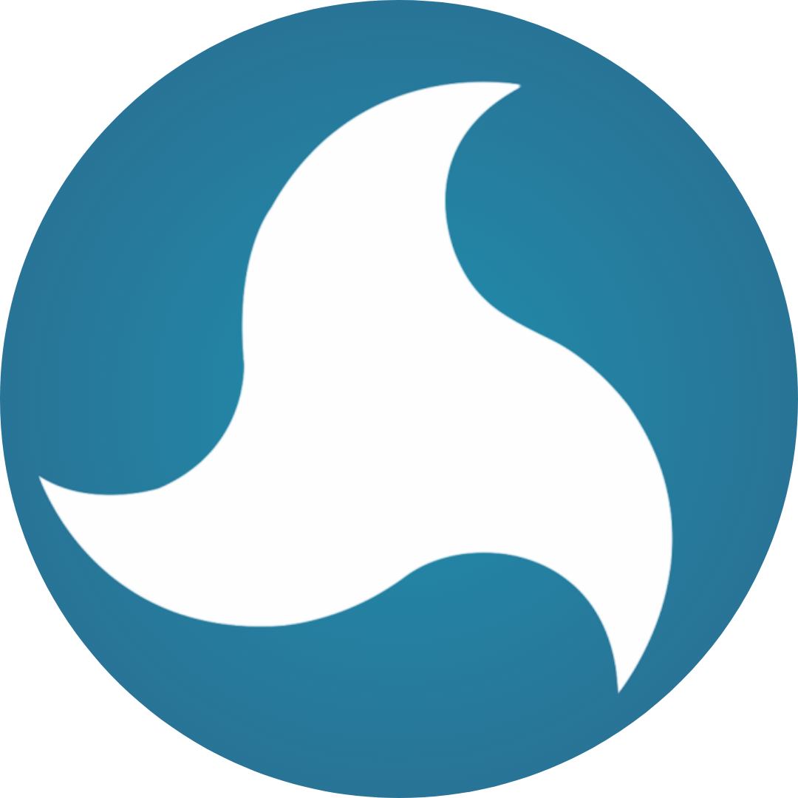

Sistem monitoring material dan supplier untuk seluruh proyek aktif — dirancang agar direksi bisa melihat, memutuskan, dan bertindak dalam satu layar.
Data langsung dari Google Sheets tim proyek — tanpa input ulang, tanpa delay. Dashboard ini adalah lapisan visibilitas di atas sistem yang sudah berjalan.